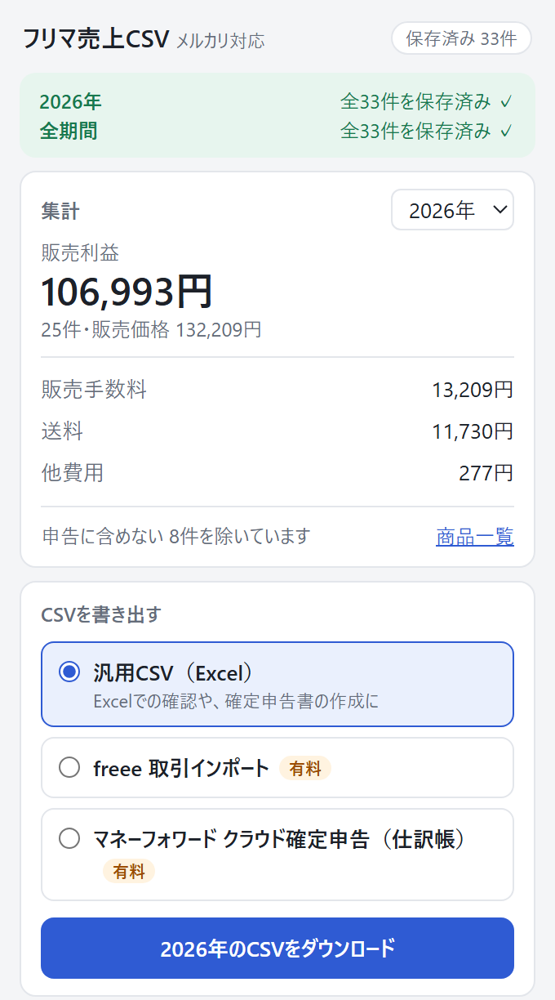

メルカリの売上を、
確定申告用のCSVに。
メルカリの販売履歴を読み取り、年ごとの売上・手数料・送料を集計するChrome拡張機能です。 freee や マネーフォワード クラウド確定申告に、そのまま取り込めるCSVを作れます。
パソコン版の Google Chrome で使えます

できること
販売履歴を表示するだけ
メルカリの「販売履歴」ページを開くと、表示された販売データを自動で保存します。手で書き写す必要はありません。
会計ソフトに取り込めるCSV
Excel で使える汎用CSVのほか、freee 会計の取引インポート、マネーフォワード クラウド確定申告の仕訳帳インポートの形式で書き出せます。
不用品は申告から外せる
自分の服や家具など、生活に使っていた物の売上は、商品ごとに「申告に含めない」を選んで集計とCSVから外せます。
使い方
- Chromeに拡張機能を追加します。
- メルカリの「出品した商品」→「販売履歴」を開き、申告する年を選んで最後のページまで表示します。
- 拡張機能のポップアップで形式を選び、「CSVをダウンロード」を押します。
販売データは、お使いのパソコンの外に出しません
販売データ（商品名・金額・販売日など）は、お使いのChromeの中だけに保存し、外部のサーバーには送信しません。 開発者を含め、ほかの人があなたの販売データを見ることはできません。 詳しくはプライバシーポリシーをご覧ください。
料金
| 無料 | 有料プラン | |
|---|---|---|
| 料金 | 0円 | 年額 2,480円 1年ごとの自動更新 |
| 販売履歴の読み込み・集計 | ○ | ○ |
| 申告に含めない商品の選択 | ○ | ○ |
| 汎用CSV（Excel） | ○ | ○ |
| freee・マネーフォワード形式のCSV有料 | — | ○ |
- 有料プランは、拡張機能の中から申し込めます。お支払いはクレジットカードです（決済サービスの Stripe を利用します）。
- 拡張機能の「プランの管理」から、いつでも解約できます。解約しても、支払い済みの期間の終わりまで使えます。
- 料金・解約・返金については特定商取引法にもとづく表記もご覧ください。
よくある質問
どの環境で使えますか
パソコン版の Google Chrome で使えます。スマートフォンのメルカリアプリには対応していません。
メルカリのアカウント情報を入力する必要はありますか
ありません。Chromeでメルカリにログインした状態で、販売履歴のページに表示された内容を読み取ります。
どの売上を申告すればよいか教えてくれますか
このツールは、売上が課税の対象になるかどうかを判断しません。迷うときは税務署や税理士にご相談ください。
別のパソコンでも有料プランを使えますか
使えます。拡張機能の申し込みの案内にある「申し込み済みの方はこちら」から、支払いに使ったメールアドレスで有効にできます。 販売データはパソコンごとに保存されるため、別のパソコンでは販売履歴を読み込み直してください。